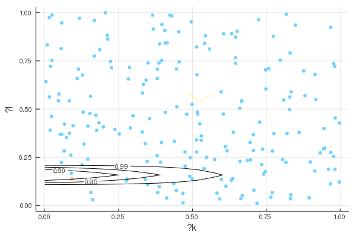

This work is licensed under a Creative Commons Attribution-ShareAlike 4.0 International License
This document discusses inference for the two-step production function estimator in Grieco & McDevitt.
Inference for Grieco & McDevitt Replication¶
Many, perhaps most, estimators in econometrics are extrumem estimators. That is, many estimators are defined by where $\hat{Q}_n(\theta)$ is some objective function that depends on data. Examples include maximum likelihood, nonlinear least squares, and as we are using for this example, GMM, See Newey and McFadden (1994) for more details and examples.
We will encounter extremum estimators often in this course, so it is useful to be familiar with their statistical properties. However, since this course is not focused on econometrics, we will just state some basic “high-level” conditions for consistency and asymptotic normality, and only give brief sketches of proofs. Our main goal is to find the asymptotic distribution of $\hat{\theta}$, so that we can report standard errors and confidence regions. If $Q_n$ is differentiable, then Taking a first order expansion around $\theta_0$, Rearranging and multiplying by $\sqrt{n}$, gives If a law of large number applies to $\nabla^2 Q_n(\theta_0)$ and a central limit theorem applies to $\sqrt{n} \hat{Q}_n(\theta_0)$, then $\sqrt{n}(\hat{\theta}-\theta_0)$ will be asymptotically normal. The following theorem states this idea somewhat more precisely.
Consistency¶
Consistency for extremum estimators: assume
-
$\hat{Q}_n(\theta)$ converges uniformly in probability to $Q_0(\theta)$
-
$Q_0(\theta)$ is uniquely maximized at $\theta_0$.
-
$\Theta$ is compact and $Q_0(\theta)$ is continuous.
Then $\hat{\theta} \inprob \theta_0$
Asymptotic normality¶
Asymptotic normality for extremum estimators: assume
-
$\hat{\theta} \inprob \theta_0$
-
$\theta_0 \in interior(\Theta)$
-
$\hat{Q}n(\theta)$ is twice continuously differentiable in open $N$ containing $\theta$, and $\sup \Vert \nabla^2 \hat{Q}_n(\theta) - H(\theta) \Vert \inprob 0$ with $H(\theta_0)$ nonsingular
-
$\sqrt{n} \nabla \hat{Q}_n(\theta_0) \indist N(0,\Sigma)$
Then $\sqrt{n} (\hat{\theta} - \theta_0) \indist N\left(0,H^{-1} \Sigma H^{-1} \right)$
GMM¶
For a GMM objective function of the form: , if we assume:
-
$1/\sqrt{n} \sum_i g_i(\theta_0) \indist N(0,\Sigma)$
-
$1/n \sum_i \nabla g_i(\theta) \inprob E[\nabla g(\theta)] = D$, $W_n \inprob W$
-
$(D’WD)$ is nonsingular.
then the above theorem for asymptotic normality of extremum estimators implies that where If we additionally assume $W_n \inprob \Sigma^{-1}$, e.g. observations are independent and $W_n = \widehat{Var}(g_i(\theta))^{-1}$, then the asymptotic variance simplifies to $(D’ \Sigma D)^{-1}$. This choice of $W$ is efficient in that it leads to the smallest asymptotic variance.
2-step estimators¶
The above applies to estimators that come from minimizing a single objective function. This application involves a multi-step estimator. First, we estimated $\alpha$ and $\Phi()$, then we estimated $\beta$ by GMM using moments of the form: A similar expansion as above will give where $D=\Er[\nabla_\beta g(\beta, \alpha, \Phi)]$. If we also expand $g_i$ in terms of $\alpha$ and $\Phi$, we will get, So, there will be additional variance in $\hat{\beta}$ from the estimation of $\hat{\alpha}$ and $\hat{\Phi}$. Since $\alpha$ is finite dimensional, it is not too difficult to derive the distribution of $\sqrt{n}(\hat{\alpha}-\alpha_0)$ and estimate $\Er[\frac{\partial g_i}{\partial \alpha}(\beta,\alpha,\Phi)]$. However, $\hat{\Phi}$ is a function and is more difficult to deal with. Under some strong assumptions, but the needed assumptions are slightly restrictive and are tedious to state. An alternative approach is to redefine $g_i$ to ensure that $E[\frac{\partial g_i}{\partial \Phi}] = 0$. This can be done by letting where $x = (k, l)$, and $h(\Phi(w_{jt-1}) - x_{jt-1}) = \Er[y_{jt} - \alpha q_{jt} - x_{jt} \beta |\Phi(w_{jt-1}) - x_{jt-1}\beta]$. It is not too difficult to verify that and In other words, these moment conditions are orthogonal in the sense of Chernozhukov et al. (2018). Estimation error in $\Phi$ and $h$ only has second order effects on the estimate of $\beta$. Under appropriate assumptions, these second order effects will vanish quickly enough that they can be ignored in the asymptotic distribution of $\hat{\beta}$.
We can similarly deal with the uncertainty in $\hat{\alpha}$ by redefining the moment condition to be orthogonal with respect to $\alpha$. Let Then $\Er[\tilde{g}_{jt}(\beta_0,\alpha_0,\Phi_0)] = 0$ and Hence,
Under appropriate assumptions a CLT will apply to $\tilde{g}{jt}$, so Furthermore, $\Sigma$ can estimated by taking the sample (clustered) covariance of $\tilde{g}(\beta,\hat{\alpha},\hat{\Phi})$. Denote this by $\hat{\Sigma}(\beta)$. We then have This can be used to test $H_0: \beta = \beta_0$, or to form a confidence region by taking all values of $\beta$ for which the test fails to reject. Such an inference procedure is robust to identification problems in that it does not require an assumption about $D = D_\beta \Er[g_{jt}(\beta,\alpha_0,\Phi_0)]$ being full rank or $Q_n$ being uniquely minimized at $\beta_0$. If we are willing to assume strong identification in that $(D’ \Sigma(\beta_0)^{-1} D)$ is invertible (and, loosely speaking, the estimated version of this is far from singular relative to its estimation error), then we can take an expansion to get
See my notes from 628 and 622 on extremum estimation and on bootstrap for more details.
Results¶
First, we must load the data and prepare the data. (This repeats what was done in the assignment).
using Pkg
try
using Dialysis # This assignment itself is in the "Dialysis" package. We will use some of the functions from it.
catch
Pkg.add("https://github.com/UBCECON567/Dialysis")
end
docdir = normpath(joinpath(dirname(Base.pathof(Dialysis)), "..","docs"))
Pkg.activate(docdir)
Activating environment at `~/.julia/dev/Dialysis/docs/Project.toml`
Pkg.instantiate()
using DataFrames
dialysis = loaddata()
sort!(dialysis, (:provfs, :year))
dialysis[!,:invest] = panellag(:stations, dialysis, :provfs, :year, -1) -
dialysis[!,:stations];
dialysis[!,:labor] = (dialysis[!,:nurseFT] + 0.5*dialysis[!,:nursePT]+
dialysis[!,:ptcareFT] + 0.5*dialysis[!,:ptcarePT] +
dialysis[!,:dieticiansFT] + 0.5*dialysis[!,:dieticiansPT] +
dialysis[!,:social_workerFT] + 0.5*dialysis[!,:social_workerPT])
dialysis[!,:hiring] = panellag(:labor, dialysis, :provfs, :year, -1) -
dialysis[!,:labor];
dialysis[!,:for_profit] = dialysis[!,:profit_status].=="For Profit"
dialysis[!,:fresenius] = dialysis[!,:chain_name].=="FRESENIUS"
dialysis[!,:davita] = dialysis[!,:chain_name].=="DAVITA";
using Statistics # for mean, std, and so on
dialysis[!,:inspected_this_year] =
((dialysis[!,:days_since_inspection].>=0) .&
(dialysis[!,:days_since_inspection].<365))
stateRates = by(dialysis, [:state, :year],
df -> mean(skipmissing(df[!,:inspected_this_year])))
rename!(stateRates, :x1 => :state_inspection_rate)
dialysis = join(dialysis, stateRates, on = [:state, :year]);
dialysis[!,:city] = uppercase.(dialysis[!,:city])
comps = by(dialysis,[:city,:year],
df -> mapreduce((x) -> ifelse(ismissing(x),0,1*(x>0)), +, df[!,:patient_months])
)
rename!(comps, :x1 => :competitors)
dialysis = join(dialysis, comps, on = [:city,:year]);
using FixedEffectModels
dialysis[!,:idcat] = categorical(dialysis[!,:provfs])
qreg = reg(dialysis, @formula(pct_septic ~ days_since_inspection + patient_age +
pct_female + patient_esrd_years + pct_fistula + comorbidities +
hemoglobin), Vcov.cluster(:idcat),save=true) # saves residuals in augmentdf
dialysis[!,:quality] = -qreg.augmentdf[!,:residuals];
log_infmiss = x->ifelse(!ismissing(x) && x>0, log(x), missing) # -Inf confuses reg()
dialysis[!,:lpy] = log_infmiss.(dialysis[!,:patient_months]./12);
dialysis[!,:logL] = log_infmiss.(dialysis[!,:labor]);
dialysis[!,:logK] = log_infmiss.(dialysis[!,:stations]);
Now, we re-run the first step of estimation.
inc1 = ((dialysis[!,:patient_months] .> 0) .& (dialysis[!,:labor] .> 0) .&
(dialysis[!,:stations] .> 0) .&
.!ismissing.(dialysis[!,:quality]) .&
.!ismissing.(dialysis[!,:std_mortality]) .&
(dialysis[!,:invest].==0) .&
(dialysis[!,:hiring].!=0));
inc1[ismissing.(inc1)] .= false;
dialysis[!,:inc1] = inc1;
dialysis[!,:lsmr] = log.(dialysis[!,:std_mortality] .+ .01)
(α, Φ, αreg, eyqz)=partiallinearIV(:lpy, # y
:quality, # q
:lsmr, # z
[:hiring, :logL, :logK,
:state_inspection_rate, :competitors], # w
dialysis[findall(dialysis[!,:inc1]),:];
npregress=(xp, xd,yd)->polyreg(xp,xd,yd,degree=1),
parts=true
)
# we will need these later in step 2
dialysis[!,:Φ] = similar(dialysis[!,:lpy])
dialysis[:,:Φ] .= missing
rows = findall(dialysis[!,:inc1])
dialysis[rows,:Φ] = Φ
dialysis[!,:ey] = similar(dialysis[!,:lpy])
dialysis[:,:ey] .= missing
dialysis[rows,:ey] = eyqz[:,1]
dialysis[!,:eq] = similar(dialysis[!,:lpy])
dialysis[:,:eq] .= missing
dialysis[rows,:eq] = eyqz[:,2]
dialysis[!,:ez] = similar(dialysis[!,:lpy])
dialysis[:,:ez] .= missing
dialysis[rows,:ez] = eyqz[:,3]
α
-0.016731503377462428
The objective_gm function in Dialysis.jl constructs the $Q_n^{CUE}$
objective function described above. The following code minimizes it and
plots a confidence region for $\beta$ based on inverting the $\chi^2$
test described above.
using Optim
(obj, momenti, cue, varfn) = objective_gm(:lpy, :logK, :logL, :quality, :Φ,
:provfs, :year,
[:logK, :logL], dialysis,
clusterid=:idcat,
npregress=(xp,xd,yd)->polyreg(xp,xd,yd,degree=1,
deriv=true));
res = optimize(b->cue(b,α), # objective
[0.0, 0.0], # lower bounds, should not be needed, but
# may help numerical performance
[1.0, 1.0], # upper bounds
[0.4, 0.2], # initial value
Fminbox(BFGS()), # algorithm
autodiff=:forward)
res
* Status: success
* Candidate solution
Minimizer: [2.01e-20, 1.50e-01]
Minimum: 2.340586e+00
* Found with
Algorithm: Fminbox with BFGS
Initial Point: [4.00e-01, 2.00e-01]
* Convergence measures
|x - x'| = 3.00e-17 ≰ 0.0e+00
|x - x'|/|x'| = 2.00e-16 ≰ 0.0e+00
|f(x) - f(x')| = 0.00e+00 ≤ 0.0e+00
|f(x) - f(x')|/|f(x')| = 0.00e+00 ≤ 0.0e+00
|g(x)| = 4.44e+00 ≰ 1.0e-08
* Work counters
Seconds run: 183 (vs limit Inf)
Iterations: 7
f(x) calls: 1273
∇f(x) calls: 1273
# calculate standard errors based on normal approximation
βhat = res.minimizer
gi = momenti(βhat,α)
(Σ, n) = varfn(gi)
using ForwardDiff
using LinearAlgebra # for diag
D = ForwardDiff.jacobian(β->mean(momenti(β,α), dims=1), βhat)
Vβ = inv(D'*inv(Σ)*D)/n
@show βhat
βhat = [2.0072100763983107e-20, 0.14987299477155056]
@show sqrt.(diag(Vβ))
sqrt.(diag(Vβ)) = [1.4692926354291502, 0.05948171117514949]
nothing;
using Plots, Distributions
Plots.gr()
lb = [0., 0.]
ub = [1., 1.]
ntest = 200
βtest = [rand(2).*(ub-lb) .+ lb for i in 1:ntest];
βtest = vcat(βtest'...)
fn = β->cue(β,α)
pval = Vector{Float64}(undef, ntest);
qval = similar(pval);
Threads.@threads for i in 1:size(βtest,1)
qval[i] = fn(βtest[i,:]);
pval[i] = cdf(Chisq(2),qval[i]);
end
crit = 0.9
fig=scatter(βtest[:,1],βtest[:,2], group=(pval.<crit), legend=false,
markersize=4, markerstrokewidth=0.0, seriesalpha=1.0,
palette=:isolum, xlabel="βk", ylabel="βl")
ngrid = 20
b = range.(lb,ub, length=ngrid)
pc = Matrix{Float64}(undef, length(b[1]), length(b[2]))
qc = similar(pc)
Threads.@threads for i in CartesianIndices(pc)
qc[i] = fn([b[1][i[1]],b[2][i[2]]]);
pc[i] = cdf(Chisq(2),qc[i]);
end
fig=contour!(b[1],b[2],pc',
levels = [0.75, 0.9, 0.95, 0.99],
contour_labels=true)
display(fig)

Here we plot $Q^{CUE}_n(\beta)$.
Plots.plotly()
surface(b[1],b[2],qc', xlabel="βk", ylabel="βl")
Plot{Plots.PlotlyBackend() n=1}
Chernozhukov, Victor, Denis Chetverikov, Mert Demirer, Esther Duflo, Christian Hansen, Whitney Newey, and James Robins. 2018. “Double/Debiased Machine Learning for Treatment and Structural Parameters.” The Econometrics Journal 21 (1): C1–C68. https://doi.org/10.1111/ectj.12097.
Newey, Whitney K., and Daniel McFadden. 1994. “Chapter 36 Large Sample Estimation and Hypothesis Testing.” In, 4:2111–2245. Handbook of Econometrics. Elsevier. https://doi.org/https://doi.org/10.1016/S1573-4412(05)80005-4.